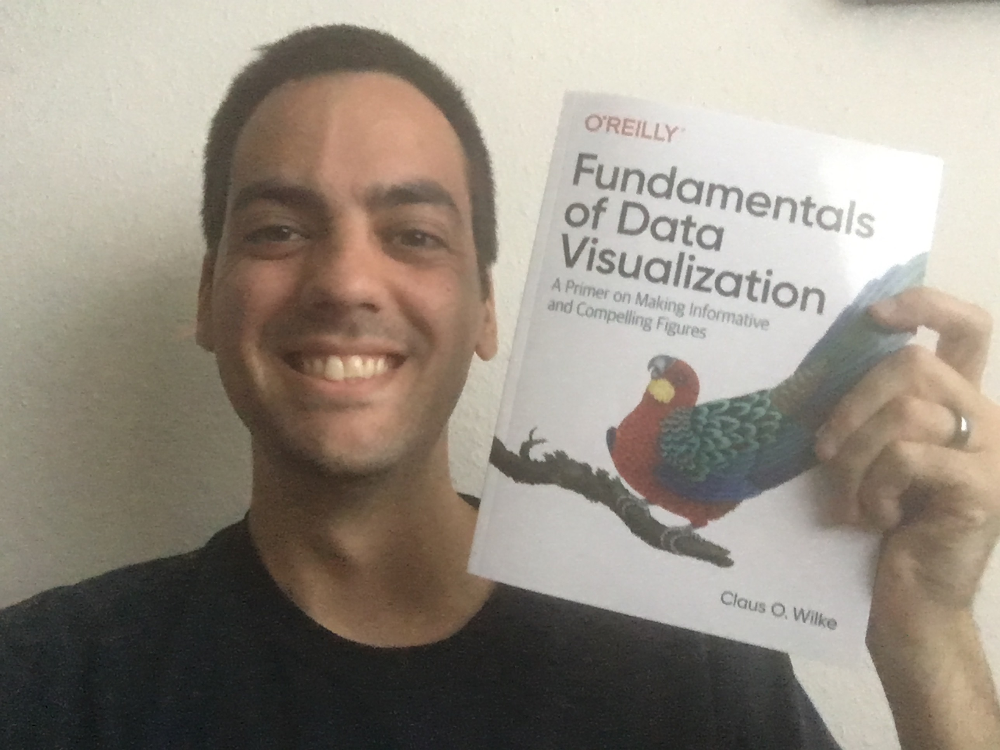

Some of you may have noticed that at the bottom of a lot of the pages on my website, I’ve got this button:
I’ve created an account on ko-fi.com, which is a platform that, in their words, provides “a friendly way for fans to support your work for the price of a coffee.” To put it more bluntly, I’ve created a way for people to give me money for my tutorials and stuff. At the risk of sounding arrogant, I’ll brag for just a little bit before geeking out about the new books I’ve gotten because of that little button.
Let me brag for just a sec
So I’ve put together half a dozen tutorials and another dozen or so workshops. The most popular ones are the tutorials on how to make vowel plots, how do formant extraction, measuring vowel overlap, and my series of R workshops. You can find them all on my Resources page.
These were skills that aren’t typically taught in a linguistics course, but they’re expected of sociophoneticians, and I knew I had to learn how to do them. So, I hunkered down, did lots of googling, and figured out this stuff on my own by frankensteining what I could find from lots of other pages online. After a while, word spread among my peers that I had acquired some skills, and I ended up helping lots of people do these things on their own data.
Eventually, I realized that there was a niche to be filled: my peers could benefit from a clear tutorial on some basic scripting techniques in sociophonetics. So, I started to write the tutorials that I wish I had had when I was learning this stuff. When I finish them, I share them on Twitter, and they’ve consistently remained among my most visited pages on my website. People from about ten different countries on four continents have contacted me for various reasons, explaining how useful they’ve found the tutorials. And there are likely many more anonymous folks too.
Since then, lots of other people have produced excellent tutorials that cover some of the same topics mine have. And that’s awesome! I’m just glad that people have so many resources available to them to learn these skills.
So what’s this Ko-fi thing?
So someone (I forget who) offhandedly mentioned that I should charge people for my tutorials. There was no way I was going to do that. I got this information for free, so I give it for free.
But, I figured if people wanted to donate money, well, who was I to stop them? So I looked around and settled on Ko-fi as a way to give people that opportunity if they wanted to take it. It seems simple enough: the button above will take you to my Ko-fi page, and from there you can donate $3, or about the price of a coffee. The money gets sent to my PayPal account and I can deposit into my bank account.
So I set it up, put and put it at the bottom of my tutorials, and didn’t think anything of it because I didn’t expect much to happen. But slowly, here and there—and much to my surprise—the donations came in. It’s not bumping me up to the next tax bracket or anything, but it does make me feel that the work I put into the tutorials is appreciated.
Update: Now that I’m faculty, I have a real salary, and I feel back taking money from people, especially grad students. But, I’ve been told that sometimes people appreciate having a way to express their appreciation.
What am I doing with the money?
Instead of just dumping it into my bank account, I figure I should do something special with the money. I decided to get a couple books. In particular, I wanted to get some books on data visualization, since that’s relevant to the tutorials themselves.
My first goal was Data Visualization by Kieren Healy. I had been following the book as it was approaching publication and was excited to see it’s positive reception. Yes, it’s pretty much all available online, but I wanted the physical copy for two reasons. For one, it’s a beautiful book and a paragon of excellence in typography. But also, I should return the favor of financially supporting someone who produces tutorials online. Thanks to one large donation that bumped me well past my goal, I’m now a proud owner of Healy’s book!

So I tweeted about it and did a small humble brag. And again, much to my surprise, some more donations came in! So in the same week, I met my second goal of purchasing Fundamentals of Data Visualization by Claus O. Wilke.

With these two books in hand, I hope my knowledge of data visualization will increase and that this percolates into future tutorials and workshops.
So I didn’t think this whole thing would work. Apparently it has. I’ve now started to compile a list of additional books I’d like to get, including Edward Tufte’s quartet of data visualization books, some linguistics books I’ve been meaning to get, and a couple statistics manuals.
Thank You
The reason for all this is to say thank you. I’m so thrilled to hear that people seem to find some utility in my tutorials, and I’m humbled that some folks went out of their way to send me a little extra pocket money as a token of their appreciation. I’m honored to be helping the linguistics community in a small way. Thank you.